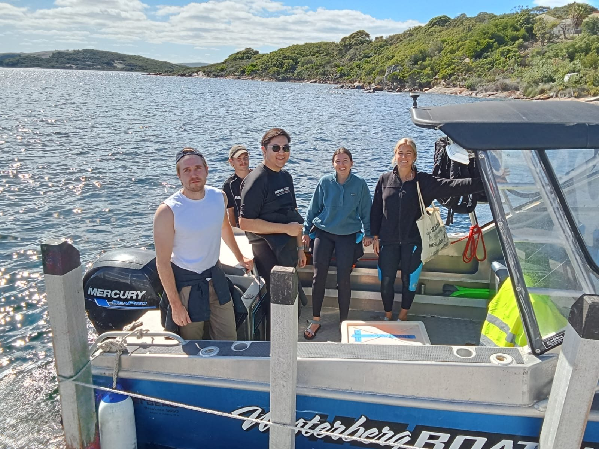
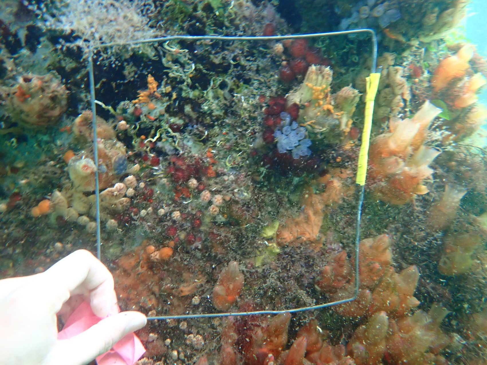

01 · ALBANY
Princess Royal Harbour
Five-day ecological investigation of invasive and non-indigenous species on jetties, pylons, ropes and chains. Conducted quadrat and transect sampling, specimen collection and identification; analysed datasets in Excel and PERMANOVA.
Invasive speciesQuadrats & transectsPERMANOVA

02 · SOUTH COTTESLOE
Benthic Ecology
Snorkel-based surveys across lagoon, reef and open-ocean habitats. Identified invertebrates and macroalgae, measured abundance and percentage cover, examined specimens and analysed ecological data using Excel and PRIMER.
Snorkel surveysSpecies identificationPRIMER
03 · SWAN–CANNING ESTUARY
Water Quality & Sediments
Measured pH, salinity, temperature, water clarity and chlorophyll-a. Used multiparameter probes, Secchi disks and sediment cores; recorded GPS locations and surveyed Batillaria australis.
Water qualitySediment coresEstuarine ecology
04 · FLOREAT BEACH
Coastal Geomorphology
Surveyed beach profiles, slope, shoreline erosion, wave conditions and sediment characteristics. Used levelling equipment, clinometers and GPS to investigate coastal processes and analysed results using Excel.
Beach profilesSediment samplingCoastal erosion